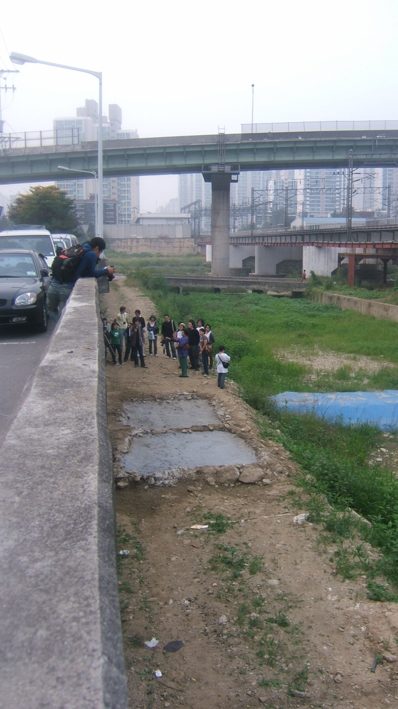
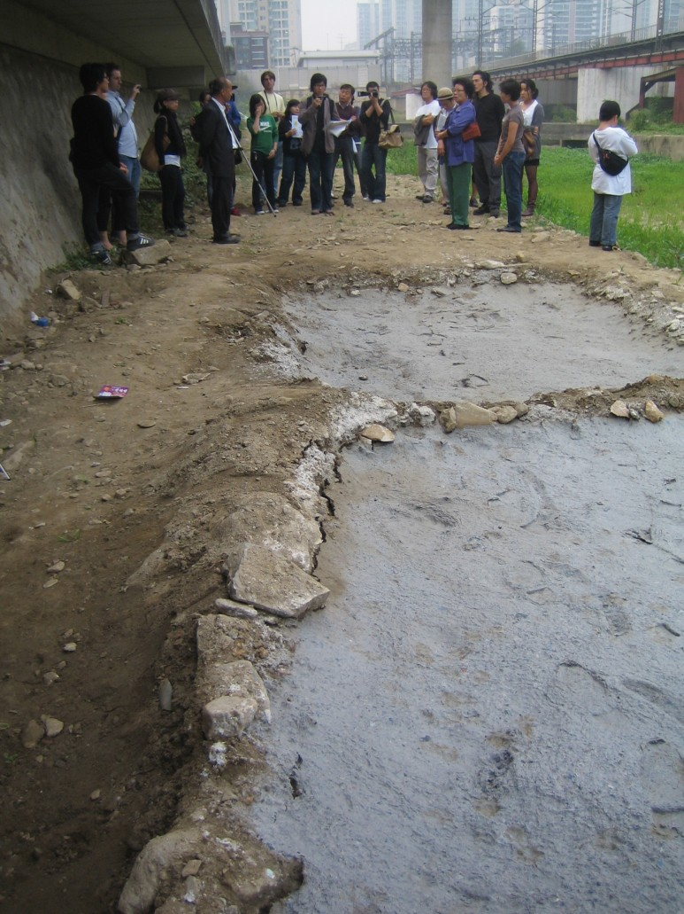
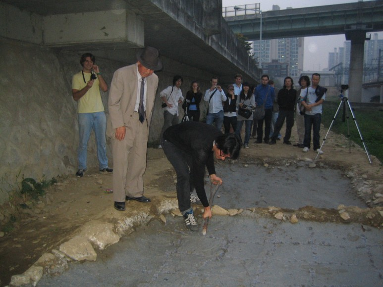

  
My project is based on oral accounts of the history of paper block drying on the banks of the Suam and Samseong Rivers, two of the tributaries of the Anyang River. The practice, involving the participation of a small number of local residents between the years 1973-1977, hints at the complex role that the Anyang River played in Korea's industrial modernisation. For my open studio presentation this month, I will create an installation which is the culmination of that research, and a site-specific installation re-staging the practice of paper block drying 30 years later in the same location. An accompanying site visit and workshop has been scheduled at 5 pm on the 19th of Oct for those who wish to
learn about this piece of the history of Anyang.
나는 현재 안양과 수암천에서의 종이 블럭 건조에 관한 구술을 바탕으로 한 작품을 준비하고 있다. 1973년에서 1977년 사이에 이 지역에 거주했던 몇몇의 주민이 참여한 이 작품은, 안양천이 한국의 근대 산업화에 기여한 복합적인 역할을 암시한다. 10월 17일부터 열리는 오픈 스튜디오를 통해, 그동안 해온 조사의 집적과 종이 블럭 건조를 재현한 건축물을 30년 전의 그 장소에서 시민들에게 공개함으로써 작품이 완성될 것이다. 10월 19일(일) 오후 5시에 있을 싸이트 방문과 워크샵은 안양의 종이 블럭 건조의 역사를 배우고자 하는 이들에게 좋은 기회가 될 것이다.
2008-10-22
saptap.egloos.com 에서 옮김